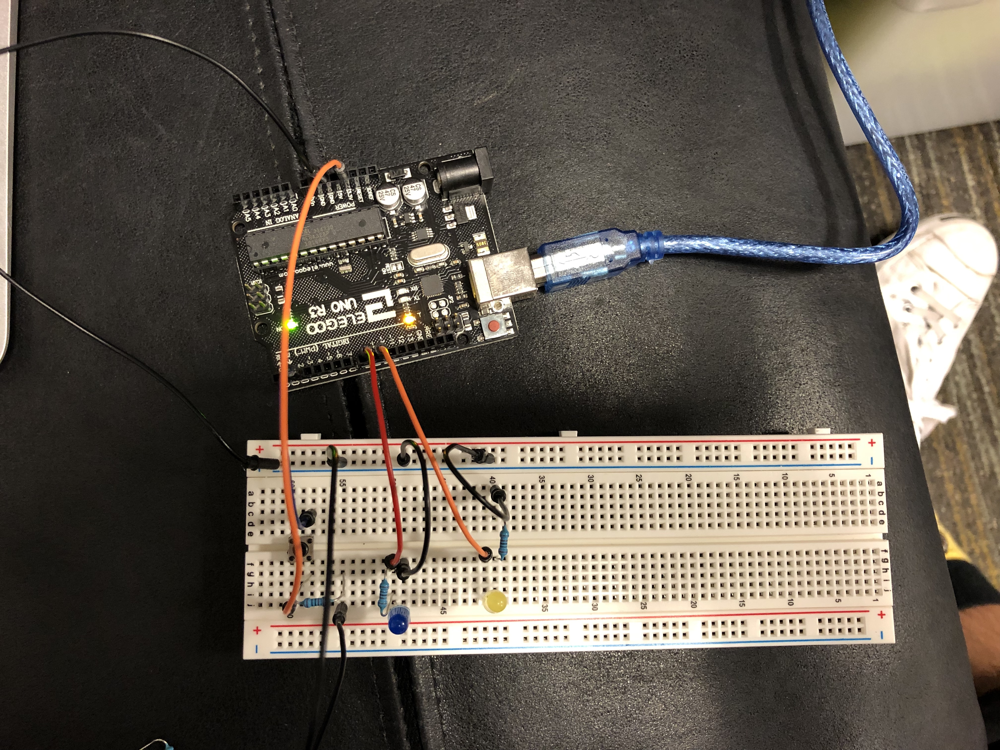
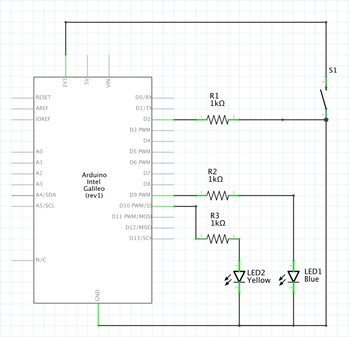
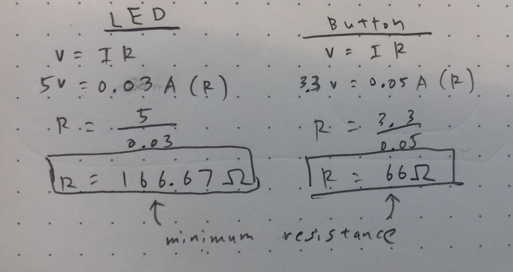

Example Student's Assignment 2!

Circuit Operation

Circuit
// constants that won't change in value. They're used here to set pin numbers:
const int buttonPin = 2; // the number of the pushbutton pin
const int buttonLed = 9; // LED connected to digital pin 9
const int glowPin = 10; // LED connected to digital pin 10
// variables will change in value:
int buttonState = 0; // variable for reading the pushbutton status
// the setup function runs once when you press reset or power the board
void setup() {
pinMode(buttonPin, INPUT); // initialize buttonPin as an input
pinMode(buttonLed, OUTPUT); // initialize bottonLed as an output
}
// the loop function runs over and over again forever
void loop() {
// read the state of the pushbutton value:
buttonState = digitalRead(buttonPin);
// if the pushbutton is pressed
if (buttonState == HIGH) {
// turn buttonLed on
digitalWrite(buttonLed, HIGH);
// fade in glowPin from min to max in increments of 5 points:
for (int fadeValue = 0 ; fadeValue <= 255; fadeValue += 5) {
// sets the value of glowPin from a range from 0 to 255:
analogWrite(glowPin, fadeValue);
// wait for 30 milliseconds to see the dimming effect
delay(30);
}
// if the pushbutton is pressed
} else {
// turn buttonLed off
digitalWrite(buttonLed, LOW);
// turn glowPin off
digitalWrite(glowPin, 0);
}
}
Code Snippet

Schematic

The minimum resistance needed for the LED and Button is 166.67 ohms and 66 ohms respectively. I used 1k ohm resistors for all circuits to keep them running at a safe amperage.